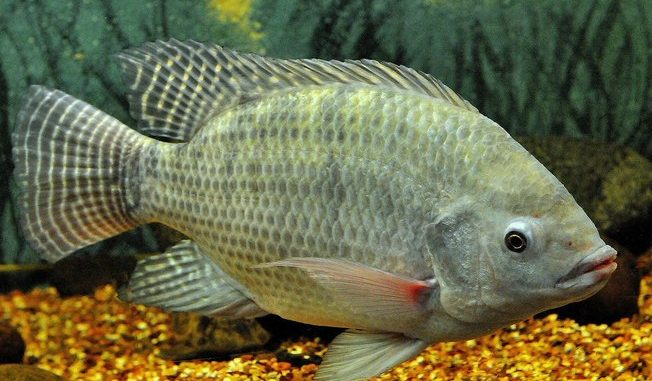

Saiba Como Criar Alevinos.
Top 10 dos Melhores Equipamentos para Pesca
Os Melhores Ponto de Pesca


Dourado (Salminus maxillosus)
Distribuição geográfica
Sua espécie é distribuída nas Bacias do Paraná, de São Francisco, do Rio Doce e do Paraíba do Sul(Estados de Mato Grosso, Mato Grosso do Sul, Pernambuco, Bahia, Alagoas, Sergipe, São Paulo,Minas Gerais, Paraná, Rio Grande do Sul e no Sul de Goiás).
Características
O Dourado é um peixe muito apreciado por seu sabor, sendo conhecido como o “Rei do Rio”. É um peixe de escamas. Cada escama tem um pequeno risco preto no meio, formando linhas longitudinais da cabeça à cauda. Possui uma coloração dourada por todo o corpo, com reflexos avermelhados. Tem uma cabeça grande, com uma boca que alcança a metade desta, repleta de caninos em forma cônica. Possui uma barbatana caudal bastante robusta. Pode atingir mais de 25 kg e alcançar 1m de comprimento
Alimentação
É um peixe carnívoro, alimentando-se de qualquer espécie de peixe, inclusive de pequenas aves, embora prefira tuvira, sarapó, lambari, curimbatá piraputanga e sardinhas
Habitat
O Dourado habita águas rápidas, corredeiras e cachoeiras, assim como as margens de barrancos, bocas de corixos e galhadas no meio dos rios. Costuma nadar em cardumes.
Barbado (Pinirampus pinirampu)
Distribuição geográfica
Sua espécie é distribuída nas Bacias Amazônica, do Prata e Araguaia -Tocantins.
Características
O peixe Barbado tem este nome por possuir barbatanas grandes no canto da boca. É um peixe de couro, com boca pequena e barbilhões sensoriais achatados. Possui nadadeira adiposa muito longa, começando logo após a nadadeira dorsal. Sua coloração é cinza a castanho, no dorso e flancos, clareando na região ventral. No entanto, sua cor tende ao castanho-esverdeado quando retirado d'água. Pode pesar 12 Kg, alcançando cerca de 80cm de comprimento total.
Alimentação
O Barbado é um peixe piscívoro (alimenta-se de outros peixes). Costuma atacar inclusive peixes que são pescados com redes, disputando o alimento com os pescadores.
Habitat
O Barbado habita a beira dos rios de médio e grande portes, próximos a vilas e a cidades. Vai ao fundo dos rios em busca de alimento.
Pintado (Pseudoplatystoma corruscans)
Distribuição geográfica
Sua espécie é distribuída em várias Bacias brasileiras, com maior importância no Pantanal e na Bacia do Rio São Francisco (Estados de Pernambuco, Bahia, Alagoas, Sergipe, São Paulo, Minas Gerais, Paraná e Rio Grande do Sul).
Características
O Pintado é um peixe de couro, com coloração acinzentada e diversas pintas pretas cilíndricas pelo corpo. Já seu ventre tem uma coloração esbranquiçada. Seu corpo é alongado e roliço. Sua cabeça é grande e achatada, com dimensão entre 1/4 a 1/3 do tamanho do corpo. Apresenta longos barbilhões. Possui ferrões junto às nadadeiras laterais e dorsal. É apreciado por sua carne muito saborosa. Pode alcançar pesos próximos a 80 kg e quase 2 m de comprimento.
Alimentação
É um peixe carnívoro, alimentando-se principalmente da tuvira, minhocuçu e pequenos peixes. Pode ser utilizado no controle de população de tilápias em açudes e tanques.
Habitat
O Pintado habita calhas dos rios, embaixo de malhas de aguapés e camalotes e em bocas de corrichos. Tem o hábito noturno.
Pacu (Piaractus mesopotamicus)
Distribuição geográfica
Sua espécie é distribuída na Bacia do Prata.
Características
O Pacu é um peixe de escamas pequenas e numerosas. Sua coloração é cinza-escura, no dorso, e amarelo-dourada, no ventre, podendo variar devido o ambiente. Tem corpo comprimido, alto e em forma de disco, apresentando quilha ventral com espinhos, cujo número pode variar de 6 a 70. Seus dentes são molariformes. Possui carne muito saborosa, por isso é muito pescado. É uma espécie que vem sendo muito utilizada na piscicultura e para a formação do híbrido Tambacu em cruzamento com o Tambaqui. Pode alcançar mais de 70 cm de comprimento e pesar até 20 Kg.
Alimentação
É um peixe omnívoro, alimentando-se de frutas, matéria vegetal e pequenos peixes.
Habitat
O Pacu habita rios e lagoas nas épocas de cheia.
Piraíba (Brachyplatystoma filamentosum)
Distribuição geográfica
Sua espécie é distribuída nas Bacias Amazônica e Tocantins-Araguaia.
Características
O Piraíba é o maior peixe de couro da Bacia Amazônica, podendo alcançar 3 m de comprimento e 150 Kg de peso. Possui corpo roliço, cabeça deprimida, com os olhos pequenos e situados no seu topo. Seus barbilhões maxilares são roliços e muito longos, cerca de duas vezes o tamanho do corpo, nos jovens, e cerca de 2/3 do corpo, no adulto. O segundo par de barbilhões mentonianos é pequeno, alcançando apenas a base da nadadeira peitoral. Sua boca é subinferior, com a placa dentígera da maxila superior localizada parcialmente à frente daquela da maxila inferior. Os jovens apresentam o corpo de coloração clara, com varias máculas escuras e arredondadas na sua porção terminal superior, as quais desaparecem à medida que o peixe cresce. Nos adultos, a coloração é cinza-escura-amarronzada, no dorso, e clara, no ventre. Sua carne não é apreciada, pois muitos acreditam que faz mal e transmite doenças.
Alimentação
É um peixe carnívoro, com tendências piscívoras, capturando outros peixes.
Habitat
O Piraíba habita calhas profundas dos grandes rios.
Pirarucu (Arapaima gigas)
Distribuição geográfica
Sua espécie é distribuída na Bacia Amazônica, na parte setentrional da América do Sul.
Características
O peixe Pirarucu é o maior peixe de escamas de água doce do Brasil e um dos maiores do mundo. Possui corpo em forma cilíndrica, cabeça achatada e mandíbulas salientes. Seus olhos são amarelados e de pupila azulada, um tanto salientes. Sua coloração é marrom-esverdeada, escura no dorso a avermelhada nos flancos, sendo a intensidade variável de acordo com o tamanho do individuo e com o tipo de água em que vive. É uma espécie que tem respiração acessória, utilizando-se do oxigênio dissolvido na água, mas principalmente do ar e, por isso, tem que subir frequentemente à superfície d'água. Pode viver mais de 18 anos. Devido à sua excelente carne, é considerado “o Bacalhau Brasileiro”. Pode atingir comprimento máximo de 2,10 m e 112 Kg de peso.
Alimentação
É um peixe omnívoro, alimentando-se de peixes, apesar de também comer caramujos, camarões de água doce, cágados, cobras, anfíbios, caranguejos, seixos, areia, entre outros. Quando jovem, alimenta-se de plâncton que, mais tarde, são complementados com peixes.
Habitat
O Pirarucu é um peixe que habita águas rasas dos rios e lagos.
Trairão (Hoplias lacerdae)
Distribuição geográfica
Sua espécie é distribuída no Amazonas, no Pará, no Mato Grosso e em São Paulo.
Características
O Trairão é um peixe de escamas maior que a traíra. Possui corpo cilíndrico. Sua coloração é quase negra, no dorso, já os flancos são acinzentados e o ventre esbranquiçado. Costuma conviver com vários indivíduos não chegando, no entanto, a formar grandes cardumes. Pode atingie 20 Kg e alcançar 1 m de comprimento.
Alimentação
É um peixe piscívoro (alimenta-se de outros peixes), muito voraz.
Habitat
O Trairão habita águas rasas com galhadas, troncos, juncos e capim, em remansos de rios, lagoas e represas, sempre emboscando suas presas.
Tucunaré (Cichla ocellaris)
Distribuição geográfica
Sua espécie é distribuída no Amazonas e nas regiões Sudeste, Centro-Oeste e Nordeste do Brasil.
Características
O Tucunaré é um peixe de escamas, com corpo alongado e um pouco comprimido. Sua coloração e amarelada, com manchas pretas e verticais distribuídas regularmente pelo corpo. Todos os Tucunarés apresentam uma mancha redonda (ocelo) no pedúnculo caudal. É bastante rápido, agressivo, forte e até estúpido. Também é muito sedentário (não realizando migrações). Tem hábitos diurnos. Pode chegar a 30 cm ou mais de 1 m de comprimento total.
Alimentação
É um peixe carnívoro, alimentando-se principalmente de peixes e camarões. Persegue a presa, ou seja, após iniciar o ataque, não desiste até conseguir capturá-la.
Habitat
O Tucunaré habita açudes, represas, rios e tanques de piscicultura.
Tilápia (Tilapia rendalli)

Distribuição geográfica
Sua espécie é distribuída em todas as Bacias do Brasil, disseminada por meio de peixamentos.
Características
A Tilápia é um peixe de escamas, com corpo um pouco alto e comprimido. Possui coloração verde-oliva prateada, com sobras verticais negras. A cor da nadadeira dorsal também é verde-oliva, com uma linha vermelha e branca até cinza-escuro com pontos oblíquos. Já a nadadeira caudal é pontuada na porção dorsal, vermelha ou amarela na porção ventral. Pode atingir 45 cm de comprimento e 2,5 kg de peso.
Alimentação
A Tilápia é um peixe omnívoro, herbívoro ou fitoplanctófago. Alimenta-se de insetos, microcrustáceos, sementes, frutos, raízes, algas, plâncton e pequenos peixes.
Habitat
A Tilápia habita águas lênticas de lagoas e represas. É adaptável à água salgada.
Mandi (Pimelodus maculatus)
Distribuição geográfica
Sua espécie é distribuída por todo o Brasil, encontrada na Amazônia e em todas as Bacias hidrográficas brasileiras.
Características
O Mandi é um peixe de couro. Suas nadadeiras possuem manchas negras e pequenas, com esporões farpados (com muco tóxico) nas nadadeiras peitorais e dorsal. Tem o corpo alongado a ligeiramente comprimido, alto, no início da nadadeira dorsal, afunilando em direção à cabeça e à nadadeira caudal. Sua cabeça é cônica com os olhos situados lateralmente. Os barbilhões maxilares ultrapassam a metade do corpo. Possui coloração parda, na região dorsal, passando para amarelada nos flancos e branca no ventre com uma linha escura no dorso. Apresenta 3 a 5 séries de grandes manchas escuras ao longo do corpo. É uma espécie de porte médio, chegando a alcançar 40 cm de comprimento e peso de até 3 Kg.
Alimentação
É um peixe omnívoro, alimentando-se de larvas bentônicas de insetos, algas, moluscos, peixes e fragmentos de vegetais.
Habitat
O Mandi habita remansos das margens dos rios, locais com areia e cascalho no fundo.
Cascudo (Hypostomus affinis)
Distribuição geográfica
Sua espécie é distribuída amplamente pela América do Sul, mais especificamente no rio Paraíba do Sul.
Características
O peixe Cascudo é um peixe que possui uma couraça recobrindo o seu corpo. Na verdade, são pequenas placas ósseas adaptadas à maneira de escamas, que percorrem o corpo em várias fileiras (de três a quatro), o que confere ao Cascudo aparência visual e sensação tátil de lixa. Seu corpo possui coloração parda com algumas manchas escuras. Sua região ventral é geralmente nua. Tem boca inferior (ventral). Pode atingir os 39 cm e alcançar 1,5 kg de peso.
Alimentação
É um peixe detritívoro e bentônico, alimentando-se de detritos do fundo dos rios, participando da fase de pré-mineralização da matéria orgânica presente no substrato lodoso.
Habitat
O Cascudo é um peixe de fundo, onde vive raspando o substrato com seus inúmeros e delicados dentes, à procura de alimento.
Lambari (Astyanax bimaculatus)

Distribuição geográfica
O Lambari habita rios, riachos, lagoas e represas, mesmo onde há ocupação humana.
Características
O Lambari é um pequeno peixe de escamas, com coloração prateada, e nadadeiras variando entre amarela, vermelha e o preta. Seu corpo é alongado e um pouco comprimido. Possui duas manchas, sendo uma próxima à nadadeira peitoral, com forma ovalada e posição horizontal, e outra em forma de clava, seguindo do pedúnculo caudal à porção mediana do corpo. Seu tamanho médio é entre 10 e os 15 centímetros de comprimento.
Alimentação
É um peixe omnívoro e detritívoro, alimentando-se de frutos, sementes e insetos terrestres, vegetais aquáticos, escamas, ovócitos e outros peixes. Até mesmo detritos e sedimentos são consumidos pelo Lambari.
Habitat
O Lambari habita rios, riachos, lagoas e represas, mesmo onde há ocupação humana.
Piau-Três-Pintas (Leporinus freiderici)
Distribuição geográfica
Sua espécie é distribuída nas Bacias Amazônica, Araguaia-Tocantins e Prata.
Características
O Piau-Três-Pintas é um peixe de escamas, muito importante para a pesca de subsistência e para o comércio local, mercados e feiras. Possui coloração prata, com 3 manchas escuras nos flancos. Daí o seu nome. Tem nadadeiras ligeiramente douradas e nadadeira caudal escura. Possui dentes em forma de pinça. Pode alcançar 40 cm de comprimento e 2 kg de peso.
Alimentação
É um peixe omnívoro, com tendência a carnívoro (principalmente insetos) ou frugívoro (frutos e sementes pequenas), dependendo da oferta de alimentos.
Habitat
O Piau-Três-Pintas habita margens de rios, lagos e florestas inundadas.
Piau-flamengo (Leporinus fasciatus)
Distribuição geográfica
Bacias amazônica e Araguaia-Tocantins.
Características
Peixes de escamas; corpo alongado e fusiforme; boca pequena e dentes incisivos (características da família). A coloração do corpo é amarelada, com 8-9 faixas escuras transversais sobre o corpo em L. fasciatus e 10-13, algumas não muito definidas, em L. aff. affinis; ambas com três faixas na cabeça. A região inferior da cabeça é geralmente avermelhada e as nadadeiras são amareladas. Alcançam cerca de 30cm de comprimento total.
Alimentação
Espécies onívoras, com tendência a carnívoras, consumindo principalmente invertebrados (insetos).
Habitat
São encontradas nas margens de rios, em locais com fundo arenoso e com pedras.